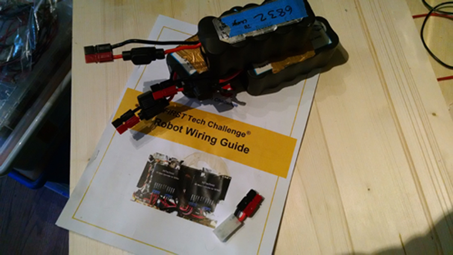

Written by Caitlin Rogers

Task: Follow the FTC Wiring Guide
Our robot has been experiencing issues that the guide mentioned, such as the Tamaya connections shutting off mid tests.
We've seen how catastrophic the Samantha shutting off mid match can be, with robots charging into walls and field elements, so this was an important step.
Reflections:
We used electrical tape to secure all but one of the motors, something that seems obvious in retrospect as we've had issues in the past with our front drive motors disconnecting.
Wire sleeves were put on all connections to the motor controllers, and the two drive trains that were electrically wired together seem to be secure in the crimped sleeve.
Some of the motors have fuses to prevent burn out so the clipped wire was a bit cramped, but we will be removing them before competition as they are very unreliable.
Probably the most important step though was replacing the battery connections with Anderson powerpoles.I replaced the connections of 3 batteries and made an adapter for the charger.
Our charger still uses the Tamaya, and i didn't want to mess with that. Basically when i cut off the Tamaya from the third battery, i left a bit of wire behind (a bit TOO much actually) and put an Anderson powerpole on it.